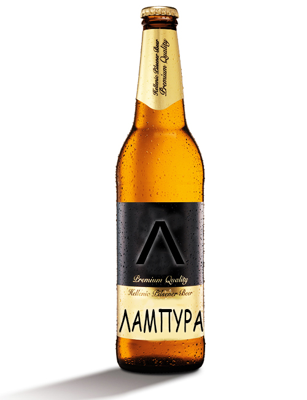

ΛΑΜΠΥΡΑ LAGER
Μια μπύρα με έντονα χαρακτηριστικά, βασισμένη στα αυστηρά πρότυπα ζυθοποίησης και με γνώμονα τα αγνά φυσικά συστατικά χωρίς προσθήκες χημικών ή αλλων επιβλαβών ουσιών. Ανήκει στην κατηγορία Pilsner και για την παραγωγή της χρησιμοποιήθηκαν βύνη από ελληνικό κριθάρι, αρωματική ποικιλία λυκίσκου και άριστης ποιότητας κρυστάλλινο νερό Παρνασσού το οποίο αναβλύζει από πηγή Αταλάντης.

ΛΑΜΠΥΡΑ RED
Μια εξαιρετικά ιδιαίτερη μπύρα. Aνήκει στην κατηγορία Special Beer και τα συστατικά της είναι βύνη ξανθιά, σπάνιες καβουρδισμένες και καραμελοποιημένες βύνες, λυκίσκος και αρωματικός λυκίσκος Tettnanger, μαγιά και νερό. Είναι ένα προϊόν κλασσικής ζυμώσεως (10C) και χαρακτηρίζεται από τη μεστή γεύση της, καθώς και από το κόκκινο «κεχριμπάρι» χρώμα της. Το φρουτώδες άρωμά της θυμίζει εξωτικά φρούτα, βατόμουρο και μέλι.
ΛΑΜΠΥΡΑ WEISS
Mια σταρένια, αφρώδης μπύρα με θολή όψη, η οποία προέρχεται από την ειδική αφροζύμη που περιέχει. Tα συστατικά της είναι βύνη σιταριού, βύνη κριθαριού, ειδικά καραμελοποιημένες βύνες σιταριού, αρωματικός λυκίσκος Tettnanger, αφροζύμη και νερό. Η ειδική αφροζύμη από την οποία παρασκευάζεται, της δίνει ένα πλούσιο, φρουτώδες άρωμα, που θυμίζει γαρύφαλλο και μπανάνα.